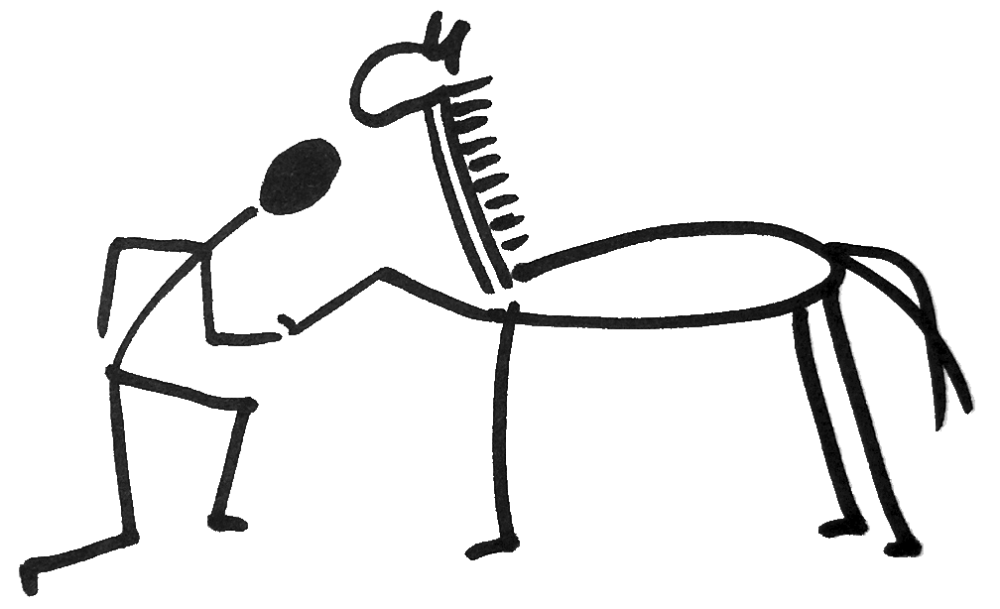
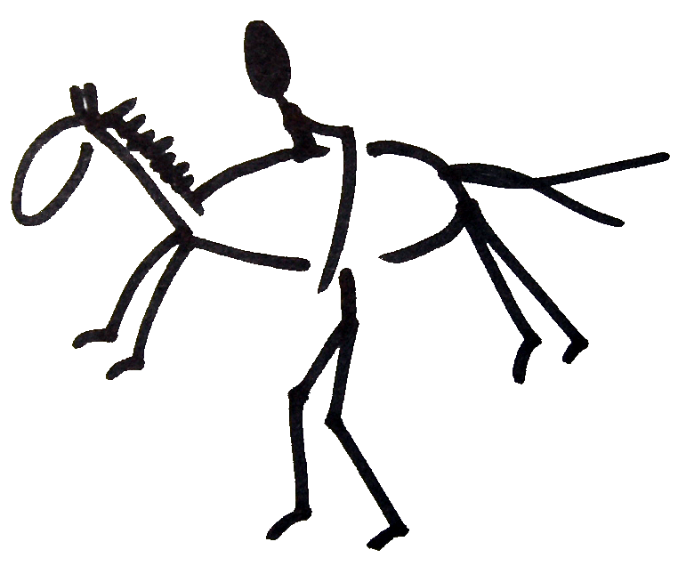

Koně a přirozená komunikace
Na akci Spirit Horse potkáte koně a lidi, kteří žijí svůj koňský život na farmě v Domašově u Brna. Tato farma není klasickou komerční stájí, ale Výcvikovým centrem přirozené komunikace s koňmi.
Přirozená komunikace s koňmi je filosofie, přístup a klíč k budování vztahů s odlišným živočišným druhem. Její myšlenky a postupy si naprosto přirozeně tykají s rozumnými myšlenkami a postupy jakéhokoliv jezdeckého pojetí a koňařiny vůbec.
Přirozená komunikace, to jsou koně a vy, vztah založený na studiu koňského jazyka, na principech koním srozumitelných a koňmi respektovatelných, využitelných tím pádem k tomu, co všichni od koní žádáme - k odevzdání obrovského atletického potenciálu do služeb člověka, ať už se tento zabývá kterýmkoliv jezdeckým odvětvím.
-- Těchto pár vět je vytrženo z článku, který sepsal majitel stájí - Fred Bednář. Celý článek můžete nalézt na Hobitím webu
Jezdecké sdružení Hobit
Vzniklo v roce 1995 jako společenství zájemců o studium přirozené komunikace s koňmi. Přirozená komunikace je metoda, která nabízí navázání a rozvíjení vztahů s koňmi na základě studia "koňského jazyka". Pokročilé zvládnutí této metody umožňuje člověku žádat od koní ochotné odevzdání jejich obrovského potenciálu v jakémkoliv oboru spolupráce, od rekreačního ježdění až po výkonnostní sport. Svého druhu je přirozená komunikace uměním a filosofickým směrem, a jako taková pozitivně ovlivňuje charakter studentů, kteří se jí vážně zabývají...
Školitel této metody v rámci sdružení i pro zájemce z řad veřejnosti je Frederik Bednář, žák amerického instruktora PNH Davida Lichmana.
Zakladatelé i ostatní členové Jezdeckého sdružení Hobit se snaží vytvářet podmínky, ve kterých by si všichni, kdo chtějí navázat s koňmi opravdový vztah, mohli dopřát pohledu na svět pod jiným úhlem, bez zničujícího spěchu moderní doby, s pochopením odlišných hodnot. Ve výukovém centru přirozené komunikace na farmě JaF v Domašově mohou zájemci studovat tuto metodu v souvislosti s chovem, výchovou i výcvikem koní. Jezdecké sdružení prezentuje své výsledky jak úspěšnou činností v oblasti jezdeckého sportu, tak i pomocí postiženým dětem, pořádáním různých výukových programů pro děti i dospělé, přehlídek a show.